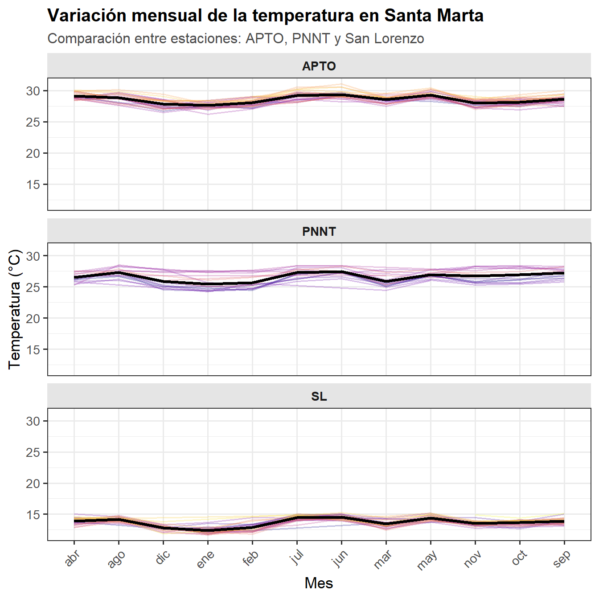
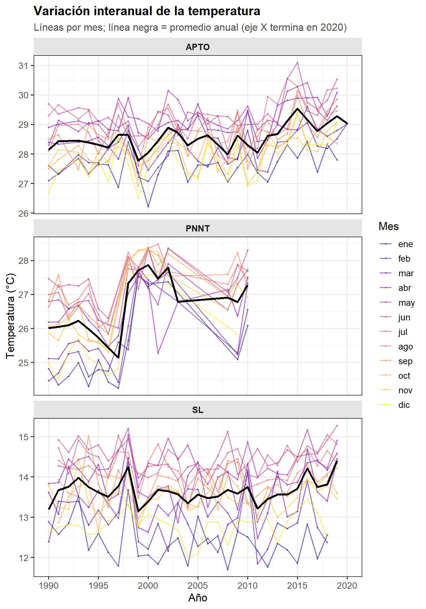
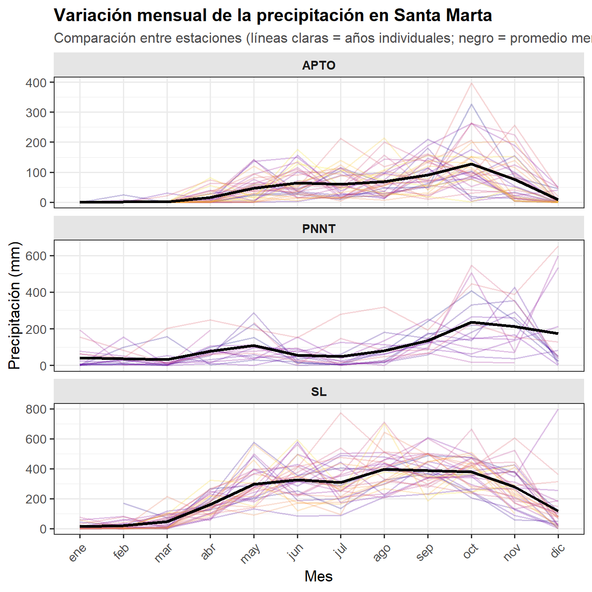
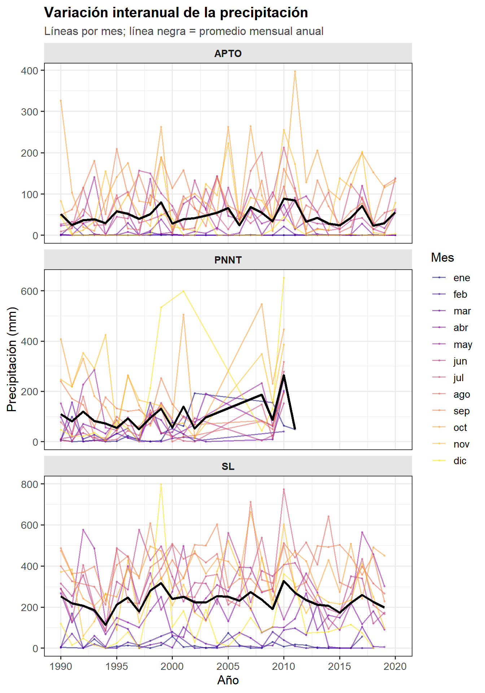
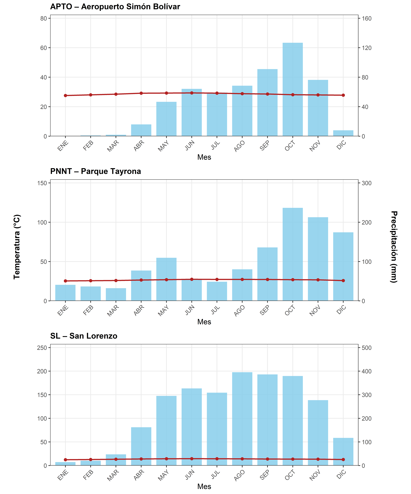
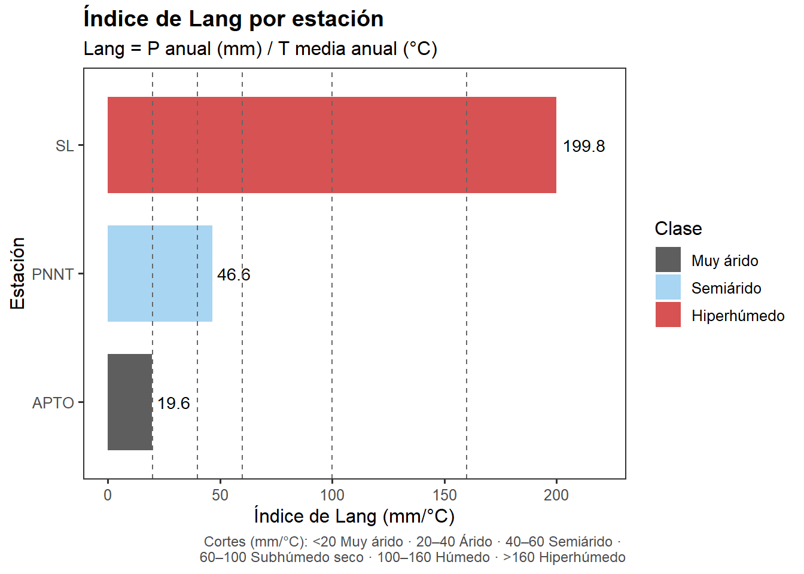
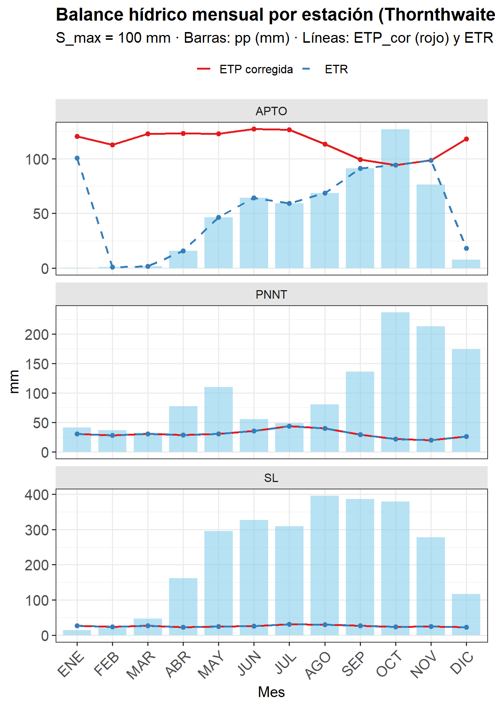

Introducción
El clima puede definirse como el conjunto de condiciones atmosféricas que predominan en un lugar determinado y que caracterizan su comportamiento a lo largo del tiempo. Dichas condiciones —temperatura, precipitación, humedad, radiación solar y viento, entre otras— determinan el tipo de ecosistema, paisaje o región biogeográfica que se desarrolla en un área dada. Por ello, el clima constituye uno de los factores abióticos más influyentes en la distribución, estructura y funcionamiento de los organismos y comunidades biológicas, condicionando su productividad, diversidad y adaptaciones ecológicas. En este sentido, la variación climática explica por qué un territorio puede albergar ecosistemas contrastantes como selvas húmedas tropicales, bosques subxerofíticos o páramos andinos.
La precipitación se expresa generalmente en milímetros (mm), donde un milímetro equivale a un litro de agua por metro cuadrado. Entre los principales indicadores se encuentran la precipitación mensual (ppm) —suma de las precipitaciones promedio diarias de un mes— y la precipitación media mensual multianual (pmm), obtenida al promediar los valores mensuales durante varios años de observación.
La temperatura, por su parte, representa la cantidad de energía térmica que llega a la superficie terrestre. La temperatura media mensual corresponde al promedio de las temperaturas medias diarias, mientras que las temperaturas máxima media y mínima media reflejan los promedios de los valores extremos diarios. De forma análoga, la temperatura media anual es el promedio de las temperaturas mensuales, y la temperatura media mensual multianual resulta de promediar los valores de un mismo mes en series temporales prolongadas.
El estudio conjunto de estas variables permite comprender los patrones climáticos locales y regionales, base para estimar índices de aridez, balances hídricos, clasificaciones de zonas de vida y tipos de bioma, herramientas indispensables para el análisis ambiental y ecológico aplicado.
Objetivos
Aprender el manejo de la plataforma 📈dhime utilizada por el IDEAM, como repositorio oficial de datos climáticos en Colombia.
Incorporar herramientas de análisis climático como los climatogramas, índices de aridez, modelos de balance hídrico y clasificaciones de biomas y formaciones vegetales o zonas de vida, basadas en datos de temperatura y precipitación.
Desarrollar capacidades para la interpretación e integración de información climática en contextos ecológicos y ambientales, con el fin de comprender los patrones de variación climática y su incidencia en la estructura de los ecosistemas.
Competencias esperadas
Gestionar y procesar información climática proveniente de bases de datos institucionales (IDEAM-DHIME), aplicando criterios de selección, limpieza y organización de datos.
Construir e interpretar climatogramas y modelos de balance hídrico, reconociendo los periodos de déficit y excedente de agua y su relación con la dinámica ecológica local.
- Calcular y analizar índices climáticos (índice de Lang, coeficiente de aridez, ETP de Thornthwaite-Mather), interpretando sus implicaciones ambientales y biogeográficas.
- Relacionar variables climáticas con tipos de vegetación y biomas, según los sistemas de clasificación ecológica más relevantes para Colombia (Holdridge, Espinal & Montenegro, Hernández & Camacho).
- Integrar conceptos de clima, agua y vegetación para explicar cómo los gradientes térmicos e hídricos determinan la distribución espacial de los ecosistemas tropicales.
Ejercicio. Análisis cimático y ecológico de tres estaciones de santa Marta.
Lo que se pretende con el siguiente ejercicio es mostrar como se puede hacer uso de información climática, obtenida de una fuente estatal y de acceso gratuito, como el IDEAM, para a partir de pocas variables, como la temperatura y la precipitación y haciendo uso de herramientas como R, se puede caracterizar diferentes localidades en términos de sus condiciones climáticas (visualización temporal, climatogramas, índices de aridez o pluviométricos y modelos de balance hídrico) y ecológicas (biomas y zonas de vida), como soporte para una comprensión ambiental de procesos ecológicos en lugares contrastantes. De igual forma, se pretende ofrecer un protocolo de facil comprensión y replicación en contextos similares. Como se mencionó anteriormente, en el siguiente video se describe el paso a paso para la descarga y la tabulación inicial de los datos requeridos para el ejercicio: enlace_video.
A continuación se resume el procedimiento realizado para obtener los datos climáticos de precipitación, temperatura, horas de luz y evapotranspiración en tres localidades para poder realizar: (1) visualización del patrón temporal de las variables climáticas, (2) climatrogramas, (3) índices de aridez, (4) modelos de balance hídrico y (5) caracterización de biomas, zonas de vida y formaciones vegetales.
Descarga de datos del IDEAM

Inicialmente se requiere descargar la información climática, desde la plataforma 📈dhime del IDEAM, la cual cuenta con series de tiempo de diferentes variables metereológicas, para distintas localidades del país. Las variables a descargar para los periodos cercanos a 30 o 40 años son:
- Temperatura del aire media mensual de tres estaciones que se referencian en la tabla 1, las cuales presentan un contraste espacial y altitudinal y que se encuentran en lugares cercanos a Santa Marta.
- La precipitación total mensual de las mismas estaciones metereológicas.
A continuación se presenta la Tabla 1 con los detalles de las tres estaciones a evaluar, que para fines didácticos, presentan un contraste de condiciones ecológicas y climáticas, a pesar de encontrarse en la misma área de Santa Marta. (1) Aeropuerto de Santa Marta (APTO): se asocia a condiciones climáticas, típicas de Santa Marta, con baja elevación, poca precipitación y niveles elevados de temperatura. (2) Parque Nacional Natural Tayrona (PNNT): presenta condiciones similares a las de APTO, pero con niveles mayores de precipitación y mayor elevación. (3) San Lorenzo (SL): es quizá la localidad más contrastante, debido a las diferencias por su elevada precipitación, su elevación considerable y sus bajos niveles de temperatura, en comparación a las antesiores estacones.
Nota: Los datos de altura se pueden descargar desde la versión en Excel (.xlsx) que se descarga desde la plataforma dhime del IDEAM.
En el siguiente video se describe el paso a paso para la descarga y la tabulación inicial de los datos requeridos para el ejercicio: enlace_video.
| No | Nombre de la Estación | Elevación (m) | Temp. prom. (°C) | Precip. anual (mm) | Ventana de datos | Periodicidad* |
|---|---|---|---|---|---|---|
| 1 | Aeropuerto Simón Bolívar (APTO) | 4 | 29 | 560 | 1980 - actual | Mensual |
| 2 | Parque Nacional Nat. Tayrona (PNNT) | 23 | 27 | 1240 | 1981 - actual | Mensual |
| 3 | San Lorenzo (SL) | 2200 | 14 | 2731 | 1982 - actual | Mensual |
*Datos promedios totales mensuales, dependiendo de su disponibilidad.
Los datos para el siguiente ejercicio, se encuentran en el archivo “datos.xlsx” que puede descargarse en el siguiente enlace: 📈datos.xlsx. En este archivo se encuentran cuatro hojas de cálculo requeridas para los diferentes procedimientos que se realizarán: (1) serie_temp, (2) serie_precipit: corresponde a las series multitemporales de datos de temperatura promedio mensual y de precipitación total mensual en las tres estaciones comparadas y que serán usadas en el primer procedimiento del ejercicio de este capítulo. (3) clima: presenta una tabla que resume la variación mensual de diferentes parámetros climáticos en cada estación y serán utilizados para el resto de procedimientos (climatogramas, índice de aridez o pluviométrico, balance hídrico y resumen de los resultados). (4) biomas: información complementaria, que servirá de soporte para asociar las estaciones evaluadas a biomas y zonas de vida o formaciones vegetales. Esta última información es tomada de diferentes referentes bibliográficos, citados en las referencias de este documento.
Nota: los valores de brillo solar, asociados a las horas de sol al día, se encuentran en el archivo de Excel del ejercico y pueden descargarse del siguiente enlace: 📈brillo_solar.
1. Visualización temporal
Corresponde al primer paso de ese ejercicio, orientado a visualizar la variación temporal (anual o entre años), de las principales variables climáticas utilizadas, como la temperatura y la precipitación. Para el procesamiento de los datos, se hará uso de las hojas de cálculo: serie_temp, (2) serie_precipit, que se encuentran en archivo de Excel 📈datos.xlsx referenciado anteriormente.
1.1 Patrón temporal de temperatura
Las siguientes librerías son requeridas para los diferentes procedimientos a realizar,enfocados en tidyverse para el procesamiento de los datos y en ggplot2 para la visualización de patrones.
Código
# Librerías
library(readxl)
library(dplyr)
library(stringr)
library(tidyverse)
library(tidyr)
library(ggplot2)
library(cowplot) # rótulos globales y composición
library(kableExtra)La Figura 1 muestra una forma general de visualizar las diferencias en el patrón mensual de la temperatura, para las localidades evaluadas, al igual que la dispersión generada por la serie de tiempo utilizada.
Código
# Importar datos
serie_temp <- read_excel("datos.xlsx", sheet = "serie_temp")
# Pasar a formato largo (tidy)
serie_temp_long <-
serie_temp %>%
pivot_longer(
cols = -c(Estación, Meses),
names_to = "Año",
values_to = "Temperatura"
) %>%
filter(!is.na(Temperatura)) %>%
filter(Año != "Promedio") %>%
mutate(Año = as.numeric(Año))
# Gráfico facetado
ggplot(serie_temp_long, aes(x = Meses, y = Temperatura,
group = Año, color = Año)) +
geom_line(alpha = 0.25, linewidth = 0.6) +
stat_summary(fun = mean, geom = "line", color = "black",
linewidth = 1.2, aes(group = 1)) +
facet_wrap(~Estación, ncol = 1) +
scale_color_viridis_c(option = "plasma", guide = "none") +
labs(
title = "Variación mensual de la temperatura en Santa Marta",
subtitle = "Comparación entre estaciones: APTO, PNNT y San Lorenzo",
x = "Mes",
y = "Temperatura (°C)"
) +
theme_bw(base_size = 13) +
theme(
plot.title = element_text(face = "bold", size = 15),
plot.subtitle = element_text(size = 12, color = "gray30"),
axis.text.x = element_text(angle = 45, hjust = 1),
strip.background = element_rect(fill = "gray90", color = NA),
strip.text = element_text(face = "bold")
)
La Figura 2 muestra la gran variabilidad de de la temperatura entre los meses evaluados, especialmente en el sector de San Lorenzo (SL).
Código
# Importar datos
serie_temp <- read_excel("datos.xlsx", sheet = "serie_temp")
# Formato largo (años desde las columnas)
serie_temp_long <- serie_temp %>%
pivot_longer(
cols = -c(Estación, Meses),
names_to = "Año",
values_to = "Temperatura"
) %>%
filter(!is.na(Temperatura), Año != "Promedio") %>%
mutate(
Año = as.numeric(Año),
Meses = factor(Meses,
levels = c("ene","feb","mar","abr","may","jun",
"jul","ago","sep","oct","nov","dic"),
ordered = TRUE)
)
# Media anual (línea negra)
media_anual <- serie_temp_long %>%
group_by(Estación, Año) %>%
summarise(Temp_media = mean(Temperatura, na.rm = TRUE), .groups = "drop")
# Determinar año mínimo observado (para el límite inferior)
xmin <- min(serie_temp_long$Año, na.rm = TRUE)
# Gráfico: eje x fijado a [xmin, 2020] en todos los paneles
ggplot(serie_temp_long, aes(x = Año, y = Temperatura, color = Meses, group = Meses)) +
geom_line(alpha = 0.55, linewidth = 0.7) +
geom_point(alpha = 0.4, size = 0.8, stroke = 0) +
geom_line(data = media_anual, aes(x = Año, y = Temp_media, group = 1),
inherit.aes = FALSE, color = "black", linewidth = 1.2) +
facet_wrap(~ Estación, ncol = 1, scales = "free_y") + # misma escala X para todos
scale_x_continuous(
limits = c(xmin, 2020),
breaks = scales::pretty_breaks(n = 8) # o usa seq(xmin, 2020, by = 2/5)
) +
scale_color_viridis_d(option = "plasma", end = 0.95, name = "Mes") +
labs(
title = "Variación interanual de la temperatura",
subtitle = "Líneas por mes; línea negra = promedio anual (eje X termina en 2020)",
x = "Año",
y = "Temperatura (°C)"
) +
theme_bw(base_size = 13) +
theme(
plot.title = element_text(face = "bold", size = 15),
plot.subtitle = element_text(size = 12, color = "gray30"),
strip.background = element_rect(fill = "gray90", color = NA),
strip.text = element_text(face = "bold"),
legend.position = "right"
)
1.2 Patrón temporal de precipitación
La Figura 3 muestra un patron mensual de variación de la precipitación superior al observado en la temperatura (Figura 1), quizá porque se utilizan los totales mensuales para la precipitación, en comparación a los promedios usados con la temperatura o porque este parámetro es más disperso.
Código
# === 1) Importar y poner en formato largo ===
precip <- read_excel("datos.xlsx", sheet = "serie_precipit")
# Base de datos en formato largo
precip_long <-
precip %>%
pivot_longer(
cols = -c(Estación, Meses),
names_to = "Año",
values_to = "Precip_mm"
) %>%
filter(!is.na(Precip_mm)) %>%
filter(Año != "Promedio") %>%
mutate(
Año = suppressWarnings(as.numeric(Año)),
Meses = factor(
Meses,
levels = c("ene","feb","mar","abr","may","jun",
"jul","ago","sep","oct","nov","dic"),
ordered = TRUE
)
)
# === 2) Figura facetada (similar a temperatura) ===
ggplot(precip_long, aes(x = Meses, y = Precip_mm, group = Año, color = Año)) +
geom_line(alpha = 0.25, linewidth = 0.6) +
# Promedio mensual (línea negra) por faceta
stat_summary(fun = mean, geom = "line", color = "black", linewidth = 1.2, aes(group = 1)) +
facet_wrap(~ Estación, ncol = 1, scales = "free_y") +
scale_color_viridis_c(option = "plasma", guide = "none") +
labs(
title = "Variación mensual de la precipitación en Santa Marta",
subtitle = "Comparación entre estaciones (líneas claras = años individuales; negro = promedio mensual)",
x = "Mes",
y = "Precipitación (mm)"
) +
theme_bw(base_size = 13) +
theme(
plot.title = element_text(face = "bold", size = 15),
plot.subtitle = element_text(size = 12, colour = "gray30"),
axis.text.x = element_text(angle = 45, hjust = 1),
strip.background = element_rect(fill = "gray90", colour = NA),
strip.text = element_text(face = "bold")
)
La Figura 4 corrobora la alta dispersión temporal que presenta esta variable de precipitación, para las tres localidades evaluadas.
Código
# Librerías
library(readxl)
library(dplyr)
library(tidyr)
library(ggplot2)
# === 1) Importar y poner en formato largo ===
precip <- read_excel("datos.xlsx", sheet = "serie_precipit")
precip_long <- precip %>%
pivot_longer(
cols = -c(Estación, Meses),
names_to = "Año",
values_to = "Precip_mm"
) %>%
filter(!is.na(Precip_mm), Año != "Promedio") %>%
mutate(
Año = as.numeric(Año),
Meses = factor(Meses,
levels = c("ene","feb","mar","abr","may","jun",
"jul","ago","sep","oct","nov","dic"),
ordered = TRUE)
)
# === 2) Totales anuales (línea negra) ===
precip_anual <- precip_long %>%
group_by(Estación, Año) %>%
summarise(Precip_total = mean(Precip_mm, na.rm = TRUE), .groups = "drop")
# Límite inferior común del eje X (año mínimo observado)
xmin <- min(precip_long$Año, na.rm = TRUE)
# === 3) Figura: eje x = Años; líneas por Mes; línea negra = total anual ===
ggplot(precip_long, aes(x = Año, y = Precip_mm, color = Meses, group = Meses)) +
geom_line(alpha = 0.55, linewidth = 0.7) +
geom_point(alpha = 0.4, size = 0.8, stroke = 0) +
geom_line(data = precip_anual,
aes(x = Año, y = Precip_total, group = 1),
inherit.aes = FALSE, color = "black", linewidth = 1.2) +
facet_wrap(~ Estación, ncol = 1, scales = "free_y") +
scale_x_continuous(
limits = c(xmin, 2020),
breaks = scales::pretty_breaks(n = 8)
) +
scale_color_viridis_d(option = "plasma", end = 0.95, name = "Mes") +
labs(
title = "Variación interanual de la precipitación",
subtitle = "Líneas por mes; línea negra = promedio mensual anual",
x = "Año",
y = "Precipitación (mm)"
) +
theme_bw(base_size = 13) +
theme(
plot.title = element_text(face = "bold", size = 15),
plot.subtitle = element_text(size = 12, color = "gray30"),
strip.background = element_rect(fill = "gray90", color = NA),
strip.text = element_text(face = "bold"),
legend.position = "right"
)
2. Climatograma
Los climatogramas son representaciones gráficas que resumen el comportamiento anual de la temperatura y la precipitación, dos de los factores climáticos más determinantes en la distribución de los organismos en los ecosistemas. Estas figuras permiten visualizar de forma simultánea la estacionalidad térmica y pluvial, facilitando la interpretación de los regímenes climáticos locales - como periodos de lluvia y sequía y su relación con los procesos ecológicos. En el análisis ambiental y ecológico, los climatogramas son herramientas esenciales para caracterizar hábitats, explicar patrones fenológicos y comprender la dinámica de la vegetación, la fauna y los flujos de energía en los ecosistemas.
El procedimiento parte de una base de datos mensual con registros de temperatura media (°C) y precipitación total (mm) para cada estación. En R, se organizan los datos en formato ordenado (tidy) y se definen los meses en su secuencia cronológica. Luego, se construyen gráficos combinados en ggplot2, donde las barras azules representan la precipitación (escalada al eje derecho) y la línea roja simboliza la temperatura media (eje izquierdo). En este caso, los climatogramas se generaron para tres estaciones comparadas —Aeropuerto Simón Bolívar (APTO), Parque Tayrona (PNNT) y San Lorenzo (SL)— utilizando escalas de precipitación que representan el doble de las escalas de temperatura. En este sentido, los meses en los que la precipitación supere a la temperatura, son considerados de periodos de lluvia y en el caso opuesto, serán periodos de sequía.
La Figura 5 muestra que en el Aeropuerto Simón Bolívar (APTO), se observa un régimen cálido constante (~28 °C) con lluvias moderadas y concentradas entre septiembre y octubre, típico del bosque seco tropical. En el Parque Nacional Natural Tayrona (PNNT), las lluvias se incrementan marcadamente a mediados del año y alcanzan su máximo en octubre, mientras que la temperatura se mantiene relativamente alta, reflejando un bosque seco de transición. Por su parte, San Lorenzo (SL), ubicado en zona montana, exhibe temperaturas más bajas (~20 °C) y un patrón de precipitaciones elevadas y prolongadas, propias de un bosque muy húmedo premontano. Estos contrastes reflejan cómo el clima regula la estructura y el funcionamiento ecológico de los ecosistemas en gradientes altitudinales y de humedad.
Código
# ---- Datos ----
meses_orden <- c("ENE","FEB","MAR","ABR","MAY","JUN","JUL","AGO","SEP","OCT","NOV","DIC")
climatog <- read_excel("datos.xlsx", sheet = "clima") %>%
rename(estacion = `Estación`,
mes = Mes, temp = Temp, pp = pp) %>%
filter(!is.na(mes), mes != "",
mes %in% meses_orden) %>% # <-- elimina filas vacías/NA
mutate(
mes = factor(mes, levels = meses_orden, ordered = TRUE)
)
# ----
mm_max_por_est <- c("APTO"=140, "PNNT"=300, "SL"=500) # guía general para PNNT/SL
# ---- Función base para PNNT y SL (sin rótulos de ejes; sec.axis sin nombre) ----
p_clima <- function(df_est, mm_max, titulo=NULL){
lim_temp <- max(mm_max/2,
max(df_est$pp, na.rm=TRUE)/2,
max(df_est$temp, na.rm=TRUE))
ggplot(df_est, aes(x=mes)) +
geom_col(aes(y = pp/2), fill="skyblue", alpha=.85, width=.8) +
geom_line(aes(y = temp, group=1), color="firebrick", linewidth=1) +
geom_point(aes(y = temp), color="firebrick", size=2) +
scale_y_continuous(limits = c(0, lim_temp),
sec.axis = sec_axis(~.*2, name = NULL),
expand = expansion(mult = c(0, .03))) +
labs(title = titulo %||% unique(df_est$estacion), x = "Mes", y = NULL) +
theme_bw(base_size = 13) +
theme(
plot.title = element_text(face="bold", size=14),
axis.text.x = element_text(angle=45, hjust=1),
axis.title.y = element_blank(),
axis.title.y.right = element_blank(),
panel.grid.minor = element_blank(),
plot.margin = margin(6, 12, 6, 8)
)
}
# ---- APTO con escala fija solicitada ----
p1 <- ggplot(filter(climatog, estacion=="APTO"), aes(x = mes)) +
geom_col(aes(y = pp/2), fill = "skyblue", alpha = 0.85, width = 0.8) +
geom_line(aes(y = temp, group = 1), color = "firebrick", linewidth = 1) +
geom_point(aes(y = temp), color = "firebrick", size = 2) +
scale_y_continuous(
limits = c(0, 80), # 0–80 °C
breaks = seq(0, 80, by = 20),
sec.axis = sec_axis(~ . * 2, # 0–160 mm
breaks = seq(0, 160, by = 40),
name = NULL),
expand = expansion(mult = c(0, .03))
) +
labs(title = "APTO – Aeropuerto Simón Bolívar", x = "Mes", y = NULL) +
theme_bw(base_size = 13) +
theme(
plot.title = element_text(face="bold", size=14),
axis.text.x = element_text(angle=45, hjust=1),
axis.title.y = element_blank(),
axis.title.y.right = element_blank(),
panel.grid.minor = element_blank(),
plot.margin = margin(6, 12, 6, 8)
)
# ---- PNNT y SL con función base (límites personalizados automáticos) ----
p2 <- p_clima(filter(climatog, estacion=="PNNT"),
mm_max_por_est["PNNT"], "PNNT – Parque Tayrona")
p3 <- p_clima(filter(climatog, estacion=="SL"),
mm_max_por_est["SL"], "SL – San Lorenzo")
# ---- Componer verticalmente ----
combo <- plot_grid(p1, p2, p3, ncol = 1,
rel_heights = c(1,1,1),
align = "v")
# ---- Reservar márgenes laterales y añadir rótulos globales centrados ----
left_gutter <- 0.08
right_gutter <- 0.08
ggdraw() +
draw_plot(combo, x = left_gutter, y = 0,
width = 1 - left_gutter - right_gutter, height = 1) +
draw_label("Temperatura (°C)",
x = left_gutter/2, y = 0.5, angle = 90,
vjust = 0.5, fontface = "bold", size = 14) +
draw_label("Precipitación (mm)",
x = 1 - right_gutter/2, y = 0.5, angle = -90,
vjust = 0.5, fontface = "bold", size = 14)
3. Índice pluviométrico de Lang
El índice pluviométrico o de aridez de Lang es un indicador climático simple pero muy informativo, que relaciona la precipitación total anual (mm) con la temperatura media anual (°C). Este cociente permite estimar la disponibilidad hídrica relativa de un ecosistema y clasificarlo en una escala que va desde condiciones muy áridas hasta muy húmedas o hiperhúmedas. En estudios ambientales y ecológicos, el índice de Lang es ampliamente utilizado para caracterizar biomas y zonas de vida, evaluar gradientes altitudinales de humedad, y comprender cómo el balance entre la temperatura y la precipitación condiciona a la estructura y la productividad de los ecosistemas.
A partir de la base de datos climática, se agrupan los valores mensuales de precipitación y temperatura por estación. Luego, se calcula la precipitación anual total (PP_anual_mm) y la temperatura media anual (T_media_C). El índice de Lang se obtiene mediante la expresión:
\[ \text{Lang} = \frac{\text{PP anual (mm)}}{\text{T media (°C)}} \]
Posteriormente, los resultados se clasifican según los rangos establecidos en la tabla de ponderaciones (Tabla 2), donde cada intervalo (por ejemplo, 20–40 o >160 mm/°C) define una clase climática. El procedimiento se automatiza en R con funciones del paquete dplyr.
Nota: Se emplea la escala típica para Lang, con los intervalos de aridez (cortes o rangos definidos= 20, 40, 60, 100, 160). En caso que se requieran cambiar, se ajustan los breaks y labels en el bloque de clasificación.
Código
# Cargar la base de datos
clima <- read_xlsx("datos.xlsx", sheet = "clima") %>%
rename(Estacion = `Estación`, Temp = Temp, pp = pp)
# === 2) Ponderaciones del índice de Lang (tabla reproducible) ===
ponderaciones <-
tibble::tribble(
~Rango_mm_por_oC, ~Clase,
"<20", "Muy árido",
"20–40", "Árido",
"40–60", "Semiárido",
"60–100", "Subhúmedo seco",
"100–160", "Húmedo",
">160", "Hiperhúmedo"
)
# Imprimir ponderaciones
ponderaciones %>%
kbl(booktabs = TRUE, align = c("c","l")) %>%
kable_classic(full_width = FALSE, html_font = "Cambria")| Rango_mm_por_oC | Clase |
|---|---|
| <20 | Muy árido |
| 20–40 | Árido |
| 40–60 | Semiárido |
| 60–100 | Subhúmedo seco |
| 100–160 | Húmedo |
| >160 | Hiperhúmedo |
Los valores obtenidos muestran un claro gradiente de aridez a humedad a lo largo del eje altitudinal de las tres estaciones (Tabla 3). En San Lorenzo (SL), el valor de Lang (199.8) clasifica al sitio como hiperhúmedo, coherente con su alta pluviosidad y baja temperatura media, propias de los bosques montanos húmedos. En contraste, el Parque Nacional Natural Tayrona (PNNT) presenta un valor intermedio (46.6), correspondiente a una condición semiárida, típica de zonas de transición donde coexisten especies de ambientes secos y húmedos. Finalmente, el Aeropuerto Simón Bolívar (APTO) exhibe el valor más bajo (19.6), clasificándolo como muy árido, característico del bosque seco tropical costero. Estos resultados reflejan cómo el índice de Lang sintetiza de manera sencilla pero robusta las diferencias climáticas que estructuran la diversidad y el funcionamiento ecológico en el gradiente costero-montano de la Sierra Nevada de Santa Marta.
Código
# Vector de cortes y etiquetas para clasificar y graficar
breaks_lang <- c(0, 20, 40, 60, 100, 160, Inf)
labels_lang <- c("Muy árido","Árido","Semiárido","Subhúmedo seco","Húmedo","Hiperhúmedo")
cortes_plot <- breaks_lang[2:(length(breaks_lang)-1)] # 20, 40, 60, 100, 160
# === 3) Cálculo del índice de Lang por estación desde 'clima' ===
lang_tabla <- clima %>%
group_by(Estacion) %>%
summarise(
PP_anual_mm = sum(pp, na.rm = TRUE),
T_media_C = mean(Temp, na.rm = TRUE),
Lang = PP_anual_mm / T_media_C,
.groups = "drop"
) %>%
mutate(Clase = cut(Lang, breaks = breaks_lang,
labels = labels_lang, right = TRUE)) %>%
arrange(desc(Lang))
# Imprimir tabla de resultados
lang_tabla %>%
mutate(
PP_anual_mm = round(PP_anual_mm, 1),
T_media_C = round(T_media_C, 2),
Lang = round(Lang, 1)
) %>%
kbl(booktabs = TRUE, align = c("l","r","r","r","l")) %>%
kable_classic(full_width = FALSE, html_font = "Cambria")| Estacion | PP_anual_mm | T_media_C | Lang | Clase |
|---|---|---|---|---|
| SL | 2730.8 | 13.67 | 199.8 | Hiperhúmedo |
| PNNT | 1240.1 | 26.60 | 46.6 | Semiárido |
| APTO | 560.2 | 28.55 | 19.6 | Muy árido |
La Figura 6 muestra unas líneas de referencia discontinuas que marcan los puntos de corte entre las categorías de Lang, lo que permite una comparación visual directa con los rangos establecidos en la tabla de clasificación. La inclusión del vector pal con colores personalizados facilita la interpretación ecológica, destacando a las condiciones muy áridas (gris oscuro), semiáridas (celeste) e hiperhúmedas (rojo intenso) presentes en los datos. La sintaxis coord_flip() y el escalado dinámico del eje (ylim) aseguran que todas las barras y etiquetas se muestren en proporción, mientras que la leyenda lateral clarifica la asignación de colores a cada clase.
La Figura 6 evidencia además un marcado gradiente altitudinal de humedad desde la zona costera hasta la montaña, como también se muestra en la Tabla 3. Este patrón sintetiza el efecto combinado de la altitud, la exposición y la distancia al mar sobre la disponibilidad de agua, mostrando cómo el índice de Lang constituye una herramienta efectiva para inferir la gradación climática en este tipo de ecosistemas tropicales.
Código
# === 4) Figura: Lang por estación con cortes de la ponderación ===
# Colores (se mostrarán solo los presentes en los datos)
pal <- c(
"Muy árido" = "grey30",
"Árido" = "grey50",
"Semiárido" = "#9FD0F1",
"Subhúmedo seco" = "#6BAED6",
"Húmedo" = "#4A79C5",
"Hiperhúmedo" = "#D33F3F"
)
niveles_presentes <- levels(droplevels(lang_tabla$Clase))
ggplot(lang_tabla, aes(x = reorder(Estacion, Lang),
y = Lang, fill = Clase)) +
geom_col(width = 0.75, alpha = 0.9) +
geom_text(aes(label = sprintf("%.1f", Lang)),
hjust = -0.15, size = 3.7) +
geom_hline(yintercept = cortes_plot,
linetype = "dashed", linewidth = 0.4, color = "grey40") +
coord_flip(ylim = c(0, max(lang_tabla$Lang, na.rm = TRUE) * 1.10)) +
scale_fill_manual(values = pal[niveles_presentes],
breaks = niveles_presentes, name = "Clase") +
labs(
title = "Índice de Lang por estación",
subtitle= "Lang = P anual (mm) / T media anual (°C)",
x = "Estación", y = "Índice de Lang (mm/°C)",
caption = paste(
"Cortes (mm/°C): <20 Muy árido · 20–40 Árido · 40–60 Semiárido ·",
"\n60–100 Subhúmedo seco · 100–160 Húmedo · >160 Hiperhúmedo"
)) +
theme_bw(base_size = 12) +
theme(
plot.title = element_text(face = "bold"),
legend.position = "right",
plot.caption = element_text(size = 9, colour = "grey30"),
panel.grid = element_blank()
)
4. Balance Hídrico

Los modelos de balance hídrico son modelos de balance de masas, que permiten estimar la relación entre la disponibilidad y la demanda de agua en un ecosistema. El método de Thornthwaite–Mather (1957) evalúa el equilibrio entre la precipitación (pp), la evapotranspiración potencial (ETP) y la evapotranspiración real (ETR), considerando además la capacidad de almacenamiento del suelo (S_max). Este modelo permite identificar periodos de déficit y excedente hídrico, los cuales determinan en gran medida la estacionalidad ecológica, la productividad vegetal, los procesos de recarga hídrica y la estructura de ensamblajes ecológicos en diferentes escalas climáticas.
El cálculo de este modelo se realiza a partir de los registros mensuales de temperatura, precipitación, horas de luz y número de días del mes. Mediante la función bal_hid() (archivo bal_hid.R), se implementa el modelo de Thornthwaite–Mather con un almacenamiento máximo de suelo (S_max = 100 mm). Esta función estima, para cada estación, los valores mensuales de ETP corregida (ETP_cor) y ETR, integrando la corrección por duración del día.
El valor de S_max = 100 mm (almacenamiento máximo de agua disponible en el suelo) corresponde a la capacidad de campo típica para suelos tropicales poco profundos y de textura media a gruesa, como los que predominan en gran parte del Caribe Colombiano (Holdridge, 1967). Para casos en los que no se disponga de esta información, se sugiere usar un rango entre 75 - 125 mm, que corresponde a suelos de capacidad media (Thornthwaite & Mather, 1957), o la propuesta para ambientes tropicales de textura media: 80 - 120 mm (FAO, 1985) y para la Región Caribe con valores entre 80 - 110 mm (IDEAM 2010). Según IGAC (2009) los suelos de la parte baja de la Sierra Nevada de Santa Marta, presentan una capacidad de retención moderada de 90 - 120 mm.
El procedimiento para el cálculo del balance hídrico propuesto por Thornthwaite y Mather (1957) corresponde a una aproximación empírica para estimar la evapotranspiración potencial (ETP) a partir de la temperatura media mensual y la disponibilidad de energía térmica anual. Este modelo parte del supuesto de que la evapotranspiración depende principalmente de la energía disponible (temperatura) y de la duración del día (fotoperiodo), factores que determinan la demanda evaporativa de la atmósfera. Esta propuesta aplica en contextos donde la información meteorológica es limitada, siendo muy utilizado en estudios ecológicos, hidrológicos y de zonificación climática por su simplicidad y solidez empírica.
El procedimiento comienza con la estimación del índice de calor mensual (i), que refleja la contribución térmica de cada mes a la energía anual disponible:
\[ i = (\frac{T}{5})^{1.514} \]
donde \(T\) es la temperatura media mensual (°C). El índice de calor anual (I) se obtiene como la suma de los índices mensuales:
\[ I = \sum_{m=1}^{12} \left(\frac{T_m}{5}\right)^{1.514} \]
A partir de $I$, se calcula el coeficiente empírico de Thornthwaite (a), que ajusta la respuesta no lineal entre temperatura y evapotranspiración:
\[ a = 6.75\times10^{-7} I^3 - 7.71\times10^{-5} I^2 + 1.792\times10^{-2} I + 0.49239 \]
Este coeficiente permite adaptar la ecuación de ETP a las condiciones térmicas de cada localidad evaluada, reflejando la influencia del rango térmico anual sobre la capacidad evaporativa del ambiente. a representa el coeficiente empírico de Thornthwaite, una constante que depende del índice de calor anual (I). El parámetro a controla cuán sensible es la ETP a la temperatura. Valores altos de a (≈1.2–1.4) indican climas cálidos y húmedos, donde la temperatura tiene más efecto en la pérdida de agua. Valores bajos (≈0.4–0.6) corresponden a climas fríos o áridos, donde la evaporación está más limitada.
Una vez conocido el coeficiente \(a\), la evapotranspiración potencial mensual (ETP) se calcula mediante la expresión empírica:
\[ ETP = 16 \times \left(\frac{10T}{I}\right)^a \]
donde, \(16\) representa el valor de referencia para un mes de 30 días y 12 horas diarias de luz. Posteriormente, esta ETP se corrige por duración real del día y número de días del mes, obteniendo la ETP corregida (ETPcor), que se aproxima mejor a las condiciones locales de radiación y fotoperiodo. La ETP representa la demanda máxima de agua por evaporación y transpiración si el suelo estuviera saturado, mientras que la ETR (evapotranspiración real) refleja la fracción efectivamente utilizada por las plantas en función de la disponibilidad hídrica. Este enfoque permite analizar el déficit y excedente de agua en los ecosistemas y entender cómo el clima controla la dinámica hídrica, la estacionalidad ecológica y la distribución de las formaciones vegetales.
Finalmente, el índice de balance hídrico (BH) propuesto por Thornthwaite y Mather (1957) se calcula mediante la fórmula: \[ BH = \frac{100~x~exceso~-~60~x~déficit}{ETP_{cor}} \]
La función “bal_hid.R” utilizada en este ejerciciopermite realizar el cálculo de ese índice, que corresponde a la eficiencia hídrica climática anual. Este índice sintetiza la interacción entre disponibilidad y demanda de agua,
Un BH positivo indica superávit hídrico predominante, es decir, precipitación abundante respecto a la demanda atmosférica.
Un BH negativo señala condiciones deficitarias o áridas, donde la pérdida potencial supera la reposición hídrica.
Valores cercanos a cero reflejan un equilibrio climático, típico de regiones subhúmedas o transicionales.
Código
# === Librerías ===
library(readxl);
library(dplyr);
library(ggplot2)
# Función de Balance hídrico mensual de Thornthwaite–Mather
source("bal_hid.R")
clima <- read_excel("datos.xlsx", sheet = "clima") %>%
rename(
estacion = `Estación`,
mes = Mes,
temp = Temp,
pp = pp,
horas_luz = horas_luz,
dias_mes = `días_mes`
)
# 1) Ejecutar el balance (S_max editable)
S_max <- 100
balance <- bal_hid(clima, S_max = S_max, corr_horas_dias = TRUE)Los resultados de la Figura 7 muestran un gradiente altitudinal marcado en la disponibilidad hídrica. En el Aeropuerto Simón Bolívar (APTO), la ETP corregida (línea roja) excede claramente a la ETR (azul) durante la mayor parte del año, indicando un régimen fuertemente deficitario característico de ambientes secos costeros, donde la vegetación enfrenta estrés hídrico prolongado. En el Parque Tayrona (PNNT), las líneas de ETP y ETR se se solapan, reflejando un equilibrio hídrico relativo que permite la coexistencia de especies adaptadas a condiciones intermedias de humedad. En cambio, en San Lorenzo (SL), la precipitación supera ampliamente la evapotranspiración durante casi todo el año, señalando un excedente hídrico constante y su asociación con bosques montanos húmedos. Este modelo evidencia cómo el balance entre energía, temperatura y agua disponible condiciona la estructura funcional de los ambientes tropicales y su variación espacial en la Sierra Nevada de Santa Marta.
El modelo de balance hídrico de Thornthwaite y Mather (1957), los valores mensuales de precipitación, ETP y ETR obtenidos con la función
bal_hid()permiten inferir que San Lorenzo presenta un balance positivo (excedente hídrico), el Parque Tayrona un equilibrio relativo, y el Aeropuerto Simón Bolívar un marcado déficit, reflejando el gradiente altitudinal y climático típico de la vertiente norte de la Sierra Nevada de Santa Marta.
Código
# 2) Figura (tu bloque, sin cambios de estilo)
p_bal <-
ggplot(balance, aes(x = mes)) +
geom_col(aes(y = pp), fill = "skyblue", alpha = 0.6, width = 0.8) +
geom_line(aes(y = etp_cor, group = 1, linetype = "ETP corregida"),
color = "#e41a1c", linewidth = 1) +
geom_point(aes(y = etp_cor), color = "#e41a1c", size = 1.8) +
geom_line(aes(y = ETR, group = 1, linetype = "ETR"),
color = "#377eb8", linewidth = 1) +
geom_point(aes(y = ETR), color = "#377eb8", size = 1.8) +
facet_wrap(~ estacion, ncol = 1, scales = "free_y") +
scale_linetype_manual(values = c("ETP corregida" = "solid", "ETR" = "dashed"), name = NULL) +
labs(
title = "Balance hídrico mensual por estación (Thornthwaite–Mather)",
subtitle = paste0("S_max = ", S_max,
" mm · Barras: pp (mm) · Líneas: ETP_cor (rojo) y ETR (azul)"),
x = "Mes", y = "mm"
) +
theme_bw(base_size = 15) +
theme(
plot.title = element_text(face = "bold"),
axis.text.x = element_text(angle = 45, hjust = 1, size = 15),
axis.text.y = element_text(size = 15),
legend.position = "top",
strip.background = element_rect(fill = "grey90", colour = NA)
)
p_bal
5. Biomas, zonas de vida o formaciones vegetales
Con los datos de temperatura promedio mensual multianual (temp), de precipitación total mensual multianual (pp), altura sobre el nivel del mar y de evapotranspiración corregida (ETPcor), utilizadas en los procedimientos anteriores, estos estimadores se asociarán en tablas de referencia, para clasificar las tres estaciones evaluadas, de acuerdo a su su bioma y a su zona de vida (formación vegetal) correspondiente y de esta manera, se realiza una tabulación que resume a los principales descriptores climáticos de cada localidad evaluada.
Paso 1: Se calcula la ETPcorr mensual con la formula de Thornthwaite (corrigiendo por días del mes y horas de luz). a_tw es el coeficiente empírico de Thornthwaite (a) (Tabla 4).
Código
# --- Librerías ---
library(readxl)
library(dplyr)
library(tidyr)
library(kableExtra)
# --- 1) Leer datos y preparar ---
clima <- read_xlsx("datos.xlsx", sheet = "clima") %>%
rename(
Estación = `Estación`,
Mes = Mes,
Temp = Temp, # °C
pp = pp, # mm
horas_luz = horas_luz, # h/día
dias_mes = `días_mes`,
altura = `altura`
) %>%
mutate(Temp_pos = pmax(Temp, 0)) # Thornthwaite usa 0 si T<0
# --- 2) Índice de calor y ETP Thornthwaite corregida ---
thornthwaite_a <- function(I) 6.75e-7*I^3 - 7.71e-5*I^2 +
1.792e-2*I + 0.49239
# Indice de calor (I)
I_tab <-
clima %>%
group_by(Estación) %>%
summarise(I = sum((Temp_pos/5)^1.514, na.rm = TRUE),
.groups = "drop")
# Datos climáticos, más ETPcor
clima <-
clima %>%
left_join(I_tab, by = "Estación") %>%
mutate(
a_tw = thornthwaite_a(I),
etp_base = if_else(I > 0, 16 *
((10 * Temp_pos / I)^a_tw), 0), # base 30 días, 12 h
ETPcorr = etp_base * (dias_mes/30) *
(horas_luz/12) # corrección mensual
)
# --- 4) Mostrar tabla ---
kbl(head(clima),
digits=2,
booktabs = TRUE, align = "lrrrllll") %>%
kable_classic(full_width = FALSE, html_font = "Cambria")| Estación | Mes | Temp | pp | horas_luz | dias_mes | altura | Temp_pos | I | a_tw | etp_base | ETPcorr |
|---|---|---|---|---|---|---|---|---|---|---|---|
| APTO | ENE | 27.61 | 0.50 | 9.2 | 31.00 | 4 | 27.61 | 167.85 | 4.52 | 151.72 | 120.20 |
| APTO | FEB | 28.06 | 1.02 | 8.8 | 28.25 | 4 | 28.06 | 167.85 | 4.52 | 163.18 | 112.69 |
| APTO | MAR | 28.53 | 1.94 | 8.1 | 31.00 | 4 | 28.53 | 167.85 | 4.52 | 176.07 | 122.81 |
| APTO | ABR | 29.15 | 16.03 | 7.6 | 30.00 | 4 | 29.15 | 167.85 | 4.52 | 194.07 | 122.91 |
| APTO | MAY | 29.29 | 46.62 | 7.2 | 31.00 | 4 | 29.29 | 167.85 | 4.52 | 198.05 | 122.79 |
| APTO | JUN | 29.37 | 64.24 | 7.6 | 30.00 | 4 | 29.37 | 167.85 | 4.52 | 200.63 | 127.07 |
Paso 2: Se construye la tabla resumen (Tabla 5) con las tres últimas columnas vacías (valores NA) para que en el siguiente paso se completen manualmente guiándose por las ponderaciones de las clasificaciones tabuladas en el archvo base de Excel (hoja: biomas).
Código
# --- 3) Resumen por estación ---
resumen <-
clima %>%
group_by(Estación) %>%
summarise(
`Precipitación - pp (mm)` = sum(pp, na.rm = TRUE),
`Temperatura (°C)` = mean(Temp, na.rm = TRUE),
`ETPcorr (mm)` = sum(ETPcorr, na.rm = TRUE),
Lang = `Precipitación - pp (mm)` /
`Temperatura (°C)`,
.groups = "drop"
) %>%
mutate(
Aridez = cut(
Lang,
breaks = c(0, 20, 40, 60, 100, 160, Inf),
labels = c("Muy árido","Árido","Semiárido",
"Subhúmedo seco","Húmedo","Hiperhúmedo"),
right = TRUE
),
# Columnas que el estudiante completa manualmente usando la hoja 'biomas'
`Holdridge (1967)` = NA_character_,
`Espinal y Montenegro (1977)` = NA_character_,
`Hernández y Camacho (1992)` = NA_character_
) %>%
select(
Estación,
`Precipitación - pp (mm)`,
`Temperatura (°C)`,
Lang, Aridez,
`ETPcorr (mm)`,
`Holdridge (1967)`,
`Espinal y Montenegro (1977)`,
`Hernández y Camacho (1992)`
)
# --- 4) Mostrar tabla ---
kbl(resumen,digits=2,
booktabs = TRUE, align = "lrrrllll") %>%
kable_classic(full_width = FALSE, html_font = "Cambria")| Estación | Precipitación - pp (mm) | Temperatura (°C) | Lang | Aridez | ETPcorr (mm) | Holdridge (1967) | Espinal y Montenegro (1977) | Hernández y Camacho (1992) |
|---|---|---|---|---|---|---|---|---|
| APTO | 560.19 | 28.55 | 19.62 | Muy árido | 1377.87 | NA | NA | NA |
| PNNT | 1240.12 | 26.60 | 46.62 | Semiárido | 363.49 | NA | NA | NA |
| SL | 2730.77 | 13.67 | 199.84 | Hiperhúmedo | 312.90 | NA | NA | NA |
Paso 3: Se completa la tabla resumen diligenciando de forma manual las tres últimas columnas.
La tabla resumen (Tabla 6) integra a los principales indicadores climáticos derivados del modelo de balance hídrico y de los índices de aridez, junto con su correspondencia en tres sistemas de clasificación ecológica: Holdridge (1967), Espinal y Montenegro (1977) y Hernández y Camacho (1992). Este esquema permite establecer una relación directa entre las variables climáticas cuantitativas (precipitación, temperatura, ETP corregida e índice de Lang) y la tipología ecológica cualitativa que define las zonas de vida y los biomas de las estaciones evaluadas. De esta forma, se logra un marco comparativo que vincula los resultados analíticos con la interpretación biogeográfica de los ecosistemas a lo largo del gradiente altitudinal y climático de Santa Marta y la vertiente norte de la Sierra Nevada.
Los resultados muestran un claro gradiente térmico e hídrico que explica la transición entre zonas áridas costeras y ecosistemas húmedos de montaña. En el Aeropuerto Simón Bolívar (APTO), la baja precipitación (560 mm), alta temperatura (28.6 °C) y elevado valor de ETP (1377.9 mm) determinan un ambiente muy árido, clasificado como bosque muy seco tropical (bms-T) o zonobioma subxerofítico tropical, característico de la franja litoral. En el Parque Tayrona (PNNT), la mayor precipitación (1240 mm) y menor déficit hídrico ubican la estación en condición semiárida, correspondiente al bosque seco tropical (bs-T), un ecosistema de transición entre ambientes xéricos y húmedos. Finalmente, en San Lorenzo (SL), la alta pluviosidad (2730 mm) y baja temperatura (13.7 °C) reflejan un régimen hiperhúmedo con predominio del bosque muy húmedo montano (bmh-M) o orobiomas de selva andina, donde la disponibilidad hídrica es máxima y el clima está controlado por la altitud y la condensación orográfica.
Código
# Plantilla con los datos faltantes (clasif_manual):
clasif_manual <-
tibble::tribble(
~Estación, ~`Holdridge (1967)`,~`Espinal y Montenegro (1977)`,
~`Hernández y Camacho (1992)`,
"APTO", "Bosque muy seco tropical (bms-T)",
"Bosque muy seco tropical (bms-T)",
"Zonobioma Subxerofítico Tropical",
"PNNT", "Bosque seco tropical (bs-T)",
"Bosque seco tropical (bs-T)",
"Zonobioma tropical alternohígrico",
"SL", "Bosque muy húmedo montano (bmh-M)",
"Bosque muy húmedo montano (bmh-M)",
"Orobiomas de Selva Andina"
)
# Tabla completa
resumen_final <-
resumen %>%
select(-`Holdridge (1967)`, -`Espinal y Montenegro (1977)`,
-`Hernández y Camacho (1992)`) %>%
left_join(clasif_manual, by = "Estación")
# Tabla en kbl
kbl(resumen_final, digits = 1,
booktabs = TRUE) %>%
kable_classic(full_width = FALSE, html_font = "Cambria")| Estación | Precipitación - pp (mm) | Temperatura (°C) | Lang | Aridez | ETPcorr (mm) | Holdridge (1967) | Espinal y Montenegro (1977) | Hernández y Camacho (1992) |
|---|---|---|---|---|---|---|---|---|
| APTO | 560.2 | 28.6 | 19.6 | Muy árido | 1377.9 | Bosque muy seco tropical (bms-T) | Bosque muy seco tropical (bms-T) | Zonobioma Subxerofítico Tropical |
| PNNT | 1240.1 | 26.6 | 46.6 | Semiárido | 363.5 | Bosque seco tropical (bs-T) | Bosque seco tropical (bs-T) | Zonobioma tropical alternohígrico |
| SL | 2730.8 | 13.7 | 199.8 | Hiperhúmedo | 312.9 | Bosque muy húmedo montano (bmh-M) | Bosque muy húmedo montano (bmh-M) | Orobiomas de Selva Andina |
Cuestionario
1. Análisis climático y ecológico con tres estaciones evaluadas
A partir de los climatogramas construidos para las estaciones APTO, PNNT y SL, identifique:
a) El patrón estacional general de cada sitio (unimodal o bimodal). b) Explique cómo la distribución de las lluvias podría afectar los ciclos fenológicos de la vegetación (floración, brotación, caída de hojas).
Con base en los valores del índice de Lang calculados, responda:
a) ¿Qué relación existe entre la precipitación anual, la temperatura media y el valor del índice?
b) ¿Por qué el índice de Lang tiende a disminuir hacia la costa y aumentar hacia la montaña?
c) Proponga un ejemplo de cómo este gradiente puede influir en la distribución de especies vegetales o tipos de suelo en la vertiente norte de la Sierra Nevada de Santa Marta.
A partir de los gráficos del balance hídrico mensual, analice:
a) En qué meses ocurre déficit hídrico y en cuáles hay excedente para cada estación.
b) ¿Qué diferencias observas entre la ETP corregida (roja) y la ETR (azul)?
c) ¿Cómo se refleja el efecto de la altitud sobre la relación entre precipitación y evapotranspiración?
Compare los resultados climáticos (precipitación, temperatura, ETP, Lang) con las clasificaciones ecológicas de Holdridge (1967), Espinal & Montenegro (1977) y Hernández & Camacho (1992).
a) ¿En qué coinciden y en qué difieren los tres sistemas?
b) ¿Qué variables del balance climático sustentan esas diferencias?
c) ¿Por qué es importante contrastar varios sistemas de clasificación al caracterizar un paisaje ecológico?
2. Análisis climático y ecológico con tres estaciones nuevas
Aplicar el flujo de pasos del capítulo ((1) visualización temporal de temperatura y precipitación → (2) climatogramas → (3) índice de Lang → (4) balance hídrico de Thornthwaite–Mather → (5) síntesis ecológica) usando tres estaciones distintas a las del ejercicio anterior (APTO, PNNT y SL), y producir:
- Un reporte HTML reproducible en Quarto, junto al archivo clima.qmd, con el reporte genrado.
- Un archivo de Excel con los cálculos tabulados, similares a los del archivo “datos.xlsx”.
Selección de estaciones
- Escoja tres estaciones diferentes a las del ejercicio (sugerencia: una costera/valle, una de transición y una montana).
- Declare el periodo de análisis (≥ 20 años si es posible; de lo contrario, el máximo continuo disponible).
- Variables mínimas por mes: Temp media (°C), Precipitación (mm), horas de luz y días del mes (estas dos últimas para corregir la ETP).
Pasos a realizar (checklist técnico)
- Ingreso y depuración de datos
- Importar los CSV/Excel originales desde la plataforma dhime del IDEAM.
- Reportar una tabla con columnas:
Estación, Mes, Temp, pp, horas_luz, días_mes.
- Patrones temporales
- Generar las figuras de temperatura y de precipitación y analizar los patrones observados.
- Climatogramas
- Generar un panel con barras de
pp(eje secundario) y línea deTemp(eje primario).
- Interpretar estacionalidad (picos, mínimos, mono/bimodalidad).
- Generar un panel con barras de
- Índice de Lang
- Calcular \(\text{Lang} = \frac{\text{PP anual (mm)}}{\text{T media (°C)}}\)
- Clasificar con los rangos (Muy árido… Hiperhúmedo).
- Presentar tabla por estación y una gráfica horizontal con cortes.
- Calcular \(\text{Lang} = \frac{\text{PP anual (mm)}}{\text{T media (°C)}}\)
- Balance hídrico de Thornthwaite–Mather
- Usar la función del capítulo (
bal_hid.R), con S_max justificado (p. ej. 100 mm salvo argumento diferente por tipo de suelo).
- Reportar ETP corregida (ETP_cor), ETR, déficit y excedente mensuales.
- Incluir la figura facetada (barras = pp; líneas = ETP_cor (roja), ETR (azul)).
- (Opcional pero recomendado) Calcular el índice sintético de balance hídrico:
\[ BH = \frac{100~x~exceso~-~60~x~déficit}{ETP_{cor}} \] e interpretar su signo/magnitud.
- Usar la función del capítulo (
- Síntesis ecológica
- Redactar una tabla resumen (PP anual, Temp. media, Lang, clase de aridez, ETPcor anual, BH si lo usan) + clasificación ecológica (Holdridge / Espinal & Montenegro / Hernández & Camacho) según la guía del capítulo.
- Interpretación comparativa (gradientes, control climático, coherencia con biomas).
- Redactar una tabla resumen (PP anual, Temp. media, Lang, clase de aridez, ETPcor anual, BH si lo usan) + clasificación ecológica (Holdridge / Espinal & Montenegro / Hernández & Camacho) según la guía del capítulo.
Referencias bibliográficas
Espinal, S. (1977). Zonas de vida o formaciones vegetales de Colombia: Memoria explicativa sobre el mapa ecológico. (📖enlace)
FAO (1985). Agroclimatological Data for Latin America and the Caribbean. FAO Plant Production and Protection Series No. 24.
Halffter, G., & Ezcurra, E. (1992). La diversidad biológica de Iberoamérica (Vol. 1). CYTED-D, Programa Iberoamericano de Ciencia y Tecnologia para el Desarollo, Instituto de Ecologia, AC, Secretaria de Desarrollo Social. (📖enlace)
Holdridge L.R. (1967). Life Zone Ecology. (📖enlace)
IDEAM (2010). Estudio Nacional del Agua – Componente de Balance Hídrico. Bogotá, Colombia.
IGAC (2006). Estudio general de suelos y zonificación de tierras del departamento del Magdalena. Instituto Geográfico Agustín Codazzi, Bogotá.
Tamarís-Turizo, C. E., & López-Salgado, H. J. (2006). Aproximación a la zonificación climática de la cuenca del río Gaira. Intropica, 69-76. (📰enlace)
Thornthwaite, C. W., & Mather, J. R. (1957). Instructions and tables for computing potential evapotranspiration and the water balance.